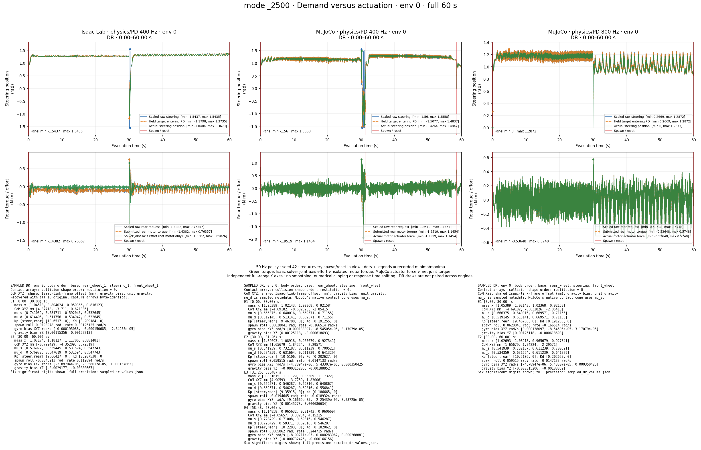
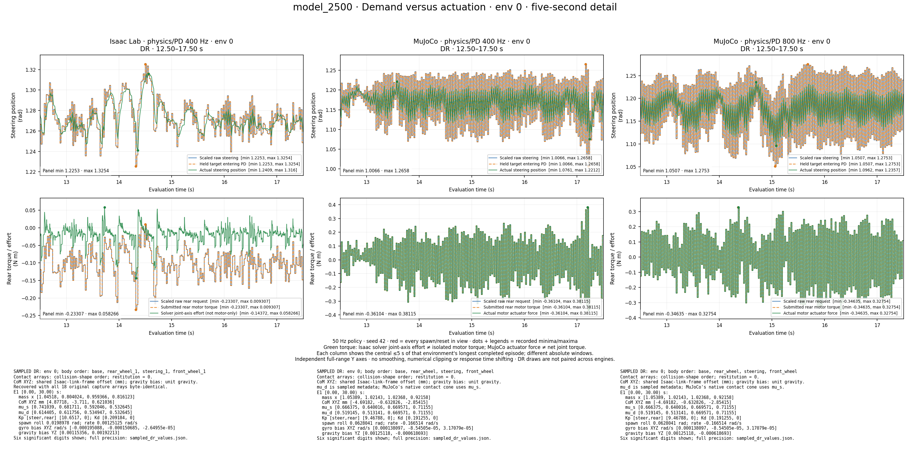
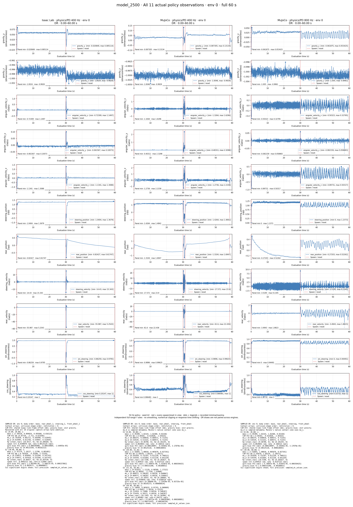
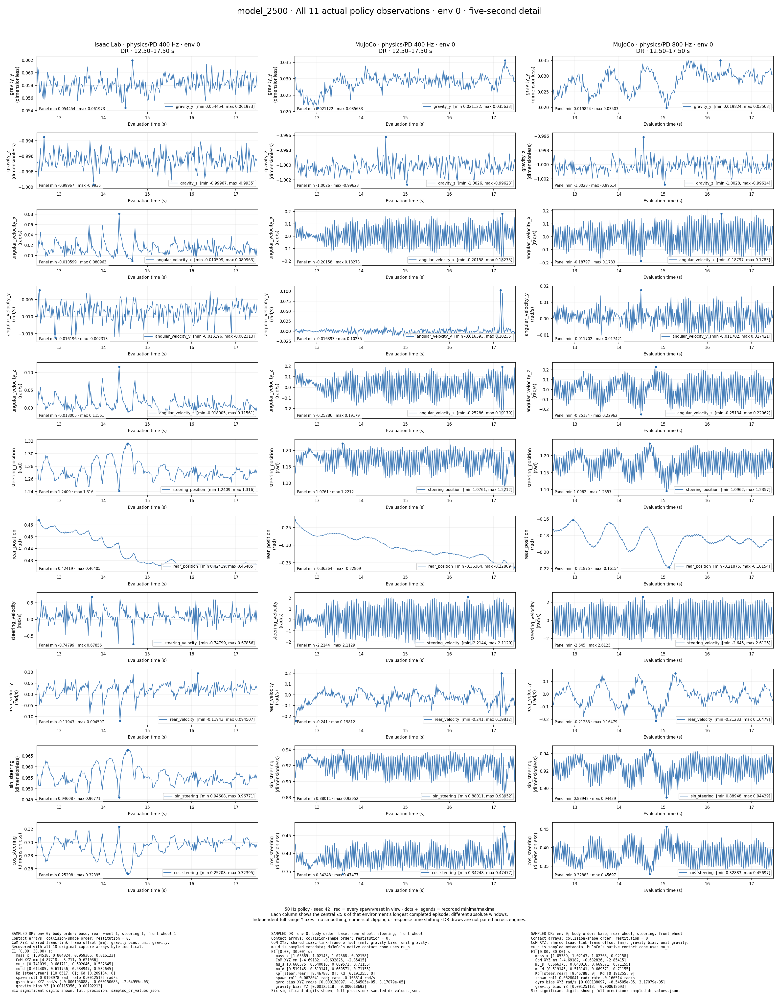
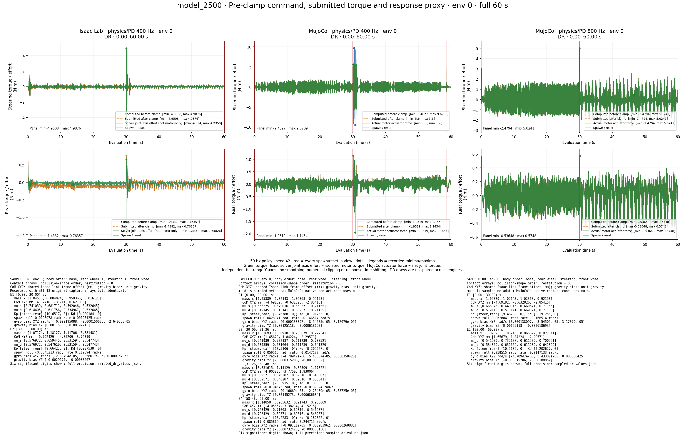
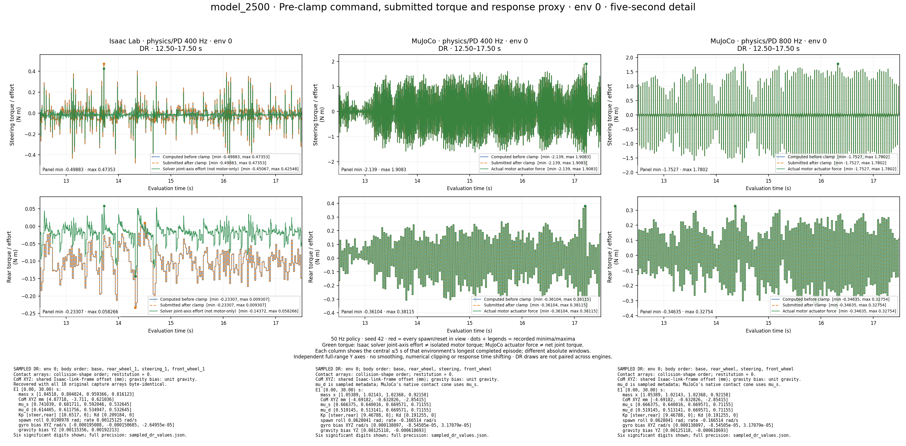
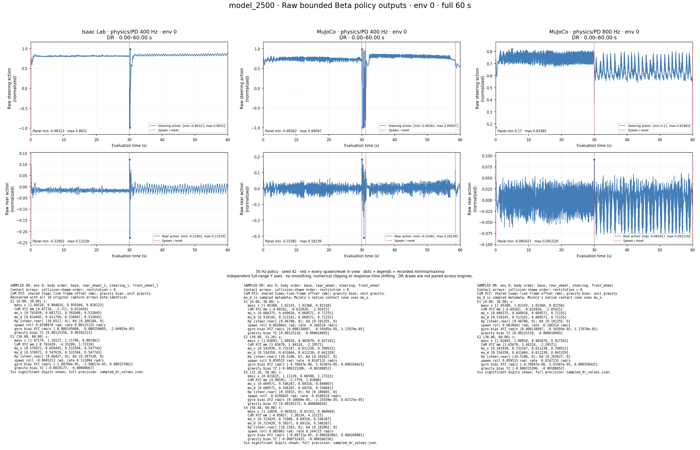
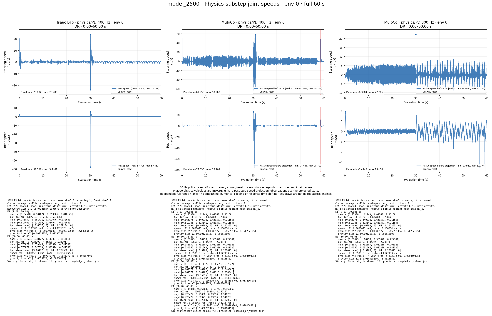

64 environments ×3000 steps, seed42, 50 Hz policy, all six terminations. Main figures: env0. Red lines mark actual spawns. Every panel lists its recorded minima/maxima; separate detail windows use tighter axes without hiding samples from the full-range views.
Different engines have different DR realizations. MuJoCo 800 Hz is a labeled timing variant, not the Isaac training rate. Isaac green torque is solver joint-axis effort, not isolated motor torque; MuJoCo green torque is actuator force, not net joint torque. Do not treat these as identical sensors.
Methods and caveats · Numerical summary · Every axis, extremum and spawn marker
Legends are at each panel’s lower right. Sampled DR values appear beneath every figure, separately for each environment/episode in view. Full-precision sampled DR values and recovery verification.
All environments, PDF page = env index +1: 64-page demand/response · 64-page observations.
| Run | Completed episodes | Mean episode | Timeout rate |
|---|---|---|---|
| Isaac Lab · physics/PD 400 Hz | 130 | 27.409 s | 83.08% |
| MuJoCo · physics/PD 400 Hz | 270 | 9.363 s | 27.41% |
| MuJoCo · physics/PD 800 Hz | 149 | 19.455 s | 61.74% |







